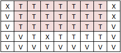

Cho bảng gồm m x n ô vuông. Mỗi ô được tô bởi 1 trong 3 màu: vàng, xanh, tím.

Tìm hình chữ nhật gồm các ô cùng màu có diện tích lớn nhất.
từ tệp hcncmln.inp theo dạng sau:
- Dòng đầu là 2 số nguyên dương m, n (0 < m, n < 1000)
- m dòng tiếp theo, mỗi dòng gồm n kí tự đại diện cho các màu X (xanh), V (vàng), T (tím).
ghi ra tệp hcncmln.out diện tích hình chữ nhật cùng màu lớn nhất tìm được.
HCNCMLN.INP
5 9 XDDDDDDDX VDDDDDDDX VDDDDDDDV VVDXDDDDV VVVVVVVVV
HCNCMLN.OUT
21
Giữa các kí tự không có dấu cách